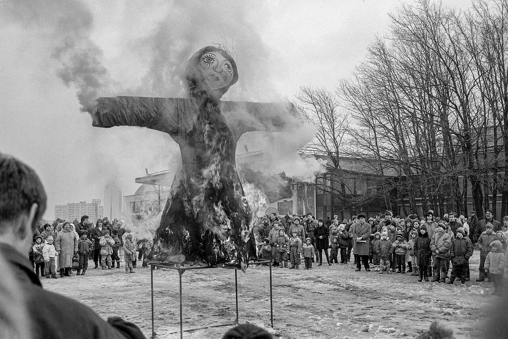
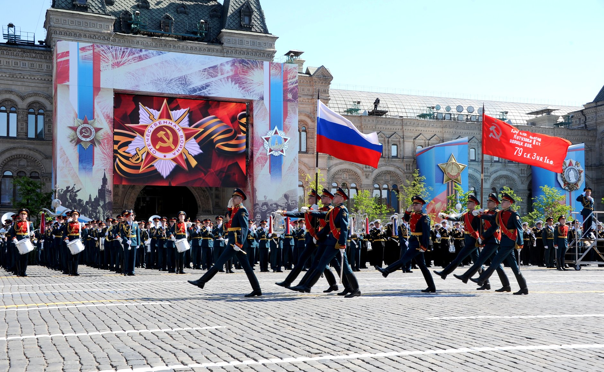
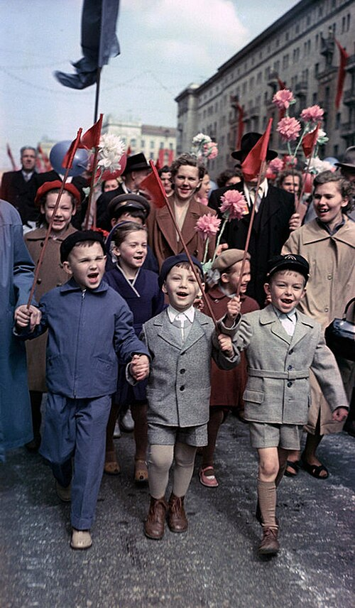
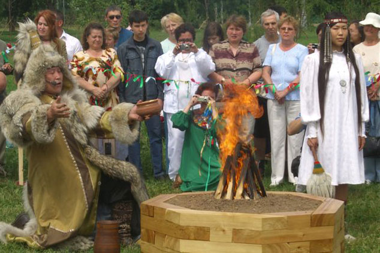

MASLENITSA
マースレニツァ
冬を送り、春を迎える伝統的な祭りです。大斎の前の一週間に行われ、ブリヌイを食べたり、そり遊びやさまざまな催しを楽しんだりします。
季節を迎える祭りや、歴史を振り返る記念日を紹介します。

冬を送り、春を迎える伝統的な祭りです。大斎の前の一週間に行われ、ブリヌイを食べたり、そり遊びやさまざまな催しを楽しんだりします。

第二次世界大戦でのナチス・ドイツに対する勝利を記念する、5月9日の祝日です。各地でパレードや追悼行事が行われ、戦没者に思いを寄せます。

5月1日は、労働にまつわる祝日として多くの国で親しまれています。ロシアでは「春と労働の日」と呼ばれています。

サハの人々が夏の訪れと自然の再生を祝う伝統行事です。祈りの儀式やごちそう、踊り、競馬、力比べなどを通して、人々が集い、新たな季節を迎えます。